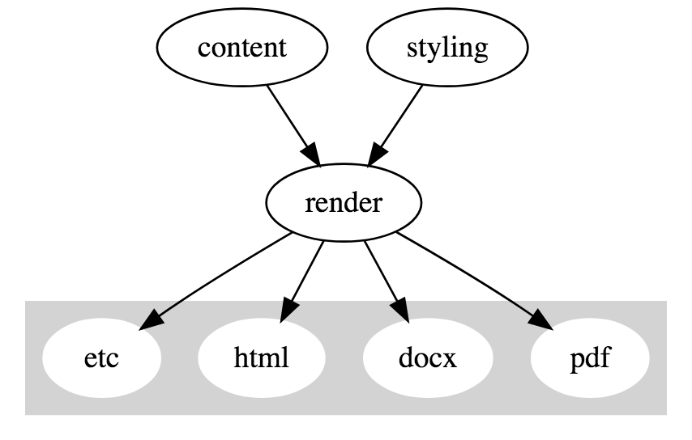
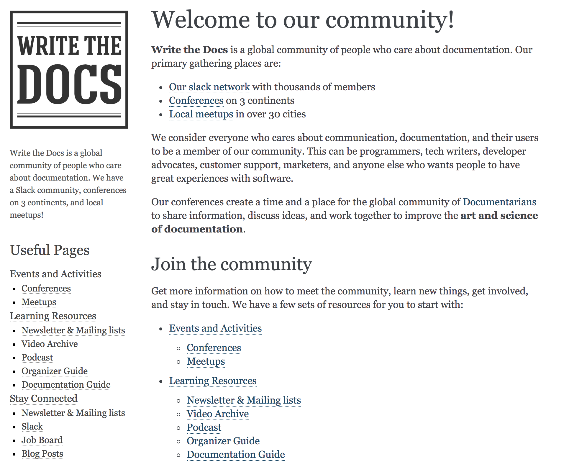

Igor Khorlo, Syneos Health
June 28, 2018 PhUSE SDE üìç Basel, Switzerland
Right way
Wrong way


Igor Khorlo
Syneos Health
https://www.linkedin.com/in/igor-khorlo-4546129a/
igor.khorlo@syneoshelath.com
igor.khorlo@gmail.com